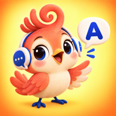

Coco English英文對話練習
連網重新開啟時，課程會自動載入已發布的新版；離線時使用手機暫存的版本。TestFlight 原生版會另外提供。
在 iPhone 或 iPad，從畫面底部上滑回到主畫面即可離開 App。
跟 Coco 一起，
開口說英文。
聽一句、說一句，再聽聽自己的聲音。iPhone 和 iPad 都可以練。
COCO第 1 / 1 句
跟讀對方台詞
Loading…
準備開始。先聽示範，再開口練習。